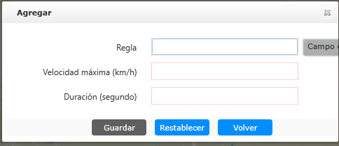

| 1. | Hace clic en lista de información de interfaz principal de los parámetros de regla de velocidad 〖〗 para abrir la ventana “Agregar geocerca”, como se muestra en la figura a continuación.

Fig 65 Agregar parámetros de regla de exceso de velocidad |
| 2. | Ingrese el nombre del parámetro de la regla de velocidad; configure la velocidad máxima y la duración máxima de la velocidad. Si la velocidad de conducción del vehículo supera el límite de velocidad máxima y la duración de la velocidad máxima supera el límite, se informará una alerta. |
| 3. | Hace clic 〖Guardar〗. Se agrega un registro de los parámetros de la regla de exceso de velocidad a la lista de parámetros de la regla de exceso
de velocidad.
|